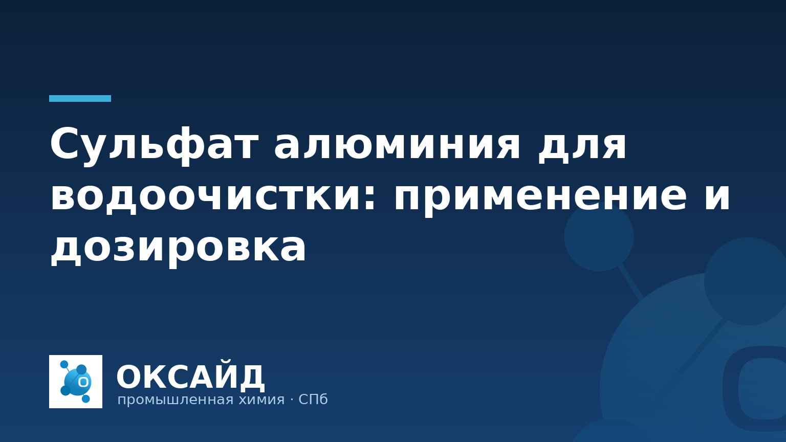

Сульфат алюминия, или сернокислый алюминий, является одним из наиболее распространенных и эффективных коагулянтов, применяемых в промышленной водоподготовке. Его использование позволяет значительно улучшить качество воды, удаляя взвешенные вещества, коллоидные частицы, органические примеси и некоторые металлы. Правильное применение и точный расчет дозировки сульфата алюминия критичны для обеспечения стабильной работы систем водоочистки на предприятиях различных отраслей.
Сульфат алюминия действует как коагулянт, вызывая агломерацию мельчайших частиц, присутствующих в воде. При растворении в воде он гидролизуется, образуя гидроксокомплексы алюминия, которые обладают высоким адсорбционным потенциалом. Эти комплексы нейтрализуют заряд взвешенных частиц, способствуя их укрупнению и образованию хлопьев (флокул), которые затем легко удаляются отстаиванием или фильтрацией.
Области применения сульфата алюминия включают:
Эффективность процесса коагуляции во многом зависит от характеристик исходной воды, таких как pH, температура, щелочность и концентрация загрязняющих веществ.
Сульфат алюминия поставляется в двух основных формах: твердой (гранулированной или кусковой) и жидкой (водный раствор). Выбор формы зависит от технологических особенностей предприятия, объемов потребления и имеющегося оборудования для дозирования.
Ключевые характеристики продукта, на которые следует обращать внимание при выборе:
ООО «Оксайд» поставляет различные марки сульфата алюминия, соответствующие действующим стандартам качества. Мы обеспечиваем поставки от 1 тонны с предоставлением паспорта качества на каждую партию продукции. Ознакомиться с ассортиментом можно в нашем каталоге продукции «Оксайд».
Определение оптимальной дозировки сульфата алюминия — ключевой этап в процессе водоподготовки. Недостаточная доза не обеспечит требуемого эффекта очистки, а избыточная приведет к перерасходу реагента, снижению pH воды и возможному появлению остаточного алюминия в очищенной воде.
Процесс расчета дозировки включает следующие шаги:
Регулярный лабораторный контроль и корректировка дозировки обеспечивают стабильность и экономичность процесса водоочистки.
Правильное хранение и транспортировка сульфата алюминия важны для сохранения его свойств и безопасности персонала.
Оптимальная дозировка сульфата алюминия зависит от множества факторов: характеристик исходной воды (мутность, цветность, pH, щелочность), типа загрязняющих веществ и требуемого качества очищенной воды. Для точного определения необходимо проводить лабораторные коагуляционные пробы (Jar Test), которые имитируют процесс очистки и позволяют подобрать эффективную дозу реагента.
Жидкий сульфат алюминия представляет собой водный раствор продукта, готовый к немедленному использованию в автоматизированных системах дозирования. Он исключает пыление и упрощает процесс подготовки рабочего раствора, но требует специальных условий для хранения (коррозионностойкие емкости) и транспортировки. Твердый сульфат алюминия (гранулированный или кусковой) удобен в хранении и транспортировке, но перед применением требует растворения в воде для приготовления рабочего раствора.
При гидролизе в воде сульфат алюминия образует серную кислоту, что приводит к снижению показателя pH. Для поддержания оптимального диапазона pH (обычно 5.5-7.5 для эффективной коагуляции) может потребоваться дополнительное введение щелочных реагентов, таких как известь или сода, для корректировки щелочности воды.
Сульфат алюминия является едким веществом. При работе с ним обязательно использование средств индивидуальной защиты: защитных очков, перчаток, спецодежды. Работы следует проводить в хорошо вентилируемых помещениях. Необходимо избегать попадания продукта на кожу и слизистые оболочки. В случае контакта тщательно промыть пораженный участок водой.
Для подбора оптимальной марки сульфата алюминия и расчета необходимого объема поставки для вашего предприятия, свяжитесь с ООО «Оксайд» по телефону 8 (812) 320-40-09 — подберём марку и рассчитаем поставку.